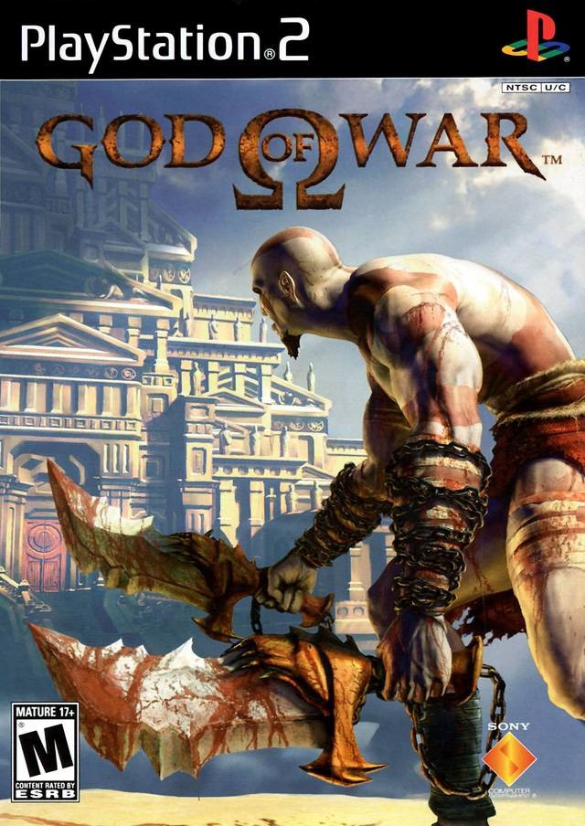
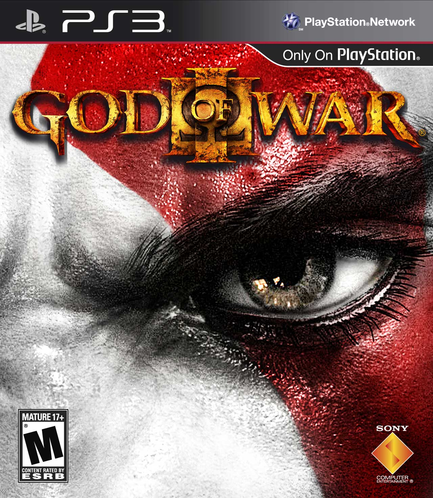

2005 / God Of War
God of War transcurre en una versión alternativa de la Antigua Grecia, donde existen seres mitológicos como los dioses o los titanes. Con la excepción de flashbacks, los hechos transcurren entre los juegos Chains of Olympus (2008) y Ghost of Sparta (2010). Hay seis localizaciones a explorar, siendo reales el Mar Egeo o la ciudad de Atenas y ficticias el Desierto de las Almas Perdidas, el Templo de Pandora, el Inframundo y una pequeña escena en el Monte Olimpo. El Mar Egeo es un escenario basado en un barco. Atenas es una ciudad en guerra asaltada por Ares, el dios de la guerra; tras la ciudad se encuentra el Desierto de las Almas Perdidas, un gran desierto con ruinas antiguas. Sin embargo, la mayoría del juego transcurre en el Templo de Pandora. El gigantesco templo, construido por el arquitecto Pathos Verdes III, está repleto de trampas y monstruos, además de contener tres secciones dedicadas al titán Atlas y a los dioses Hades y Poseidón. El Inframundo es un mar de sangre con pilares hechos de roca y huesos gigantes, donde las almas caen a la Laguna Estigia. La escena final en el Monte Olimpo, es un templo en el cielo con una sala del trono del Dios de la Guerra
2007 / God of War II
Al igual que su predecesor, God of War II se desarrolla en una versión alternativa de la antigua Grecia, poblada por dioses olímpicos, titanes, héroes y otros seres de la mitología griega. Con la excepción de los flashbacks , los eventos se establecen entre los de los juegos Betrayal (2007) y God of War III (2010). Se exploran varios lugares, incluido un escenario del mundo real en la antigua ciudad de Rodas, y varios lugares ficticios, incluida una breve escena en el Inframundo, la Guarida de Tifón, la Isla de la Creación y sus lugares, Tártaro y una breve escena en el monte Olimpo.
Rodas, su horizonte dominado por la enorme estatua, el Coloso de Rodas, es una ciudad devastada por la guerra bajo el asalto de Kratos, el dios de la guerra y su ejército espartano. La Guarida de Tifón, escondida en un lugar desconocido, es una montaña cubierta de nieve y la prisión de los Titanes Tifón y Prometeo. La Isla de la Creación es una vasta isla ubicada en el borde del mundo y hogar de las Hermanas del Destino. La isla alberga trampas mortales, rompecabezas y monstruos. En las afueras de la isla están los Corceles del Tiempo, y en la propia isla están los Templos de Láquesis y Átropos, y el Pantano de los Olvidados, que esconde la Gorgona Euríale y es el sitio de la última batalla de Jasón de los Argonautas. Más allá de la Ciénaga están las Tierras Bajas y el Gran Abismo: una enorme división que bloquea el camino hacia el Palacio de las Parcas. En la base del Abismo está el reino del Tártaro, la prisión del Titán Atlas, condenado a tener el mundo sobre sus hombros. El Templo de las Parcas también está lleno de trampas y monstruos, mientras que la batalla final ocurre en el Monte Olimpo, hogar de los dioses.
2008 / God of War: Chains of Olympus
Al igual que con los juegos anteriores de la franquicia God of War , God of War: Chains of Olympus se desarrolla en una versión alternativa de la antigua Grecia , poblada por los dioses olímpicos , los titanes y otros seres de la mitología griega . Con la excepción de los flashbacks , los eventos se establecen entre los de los juegos Ascension (2013) y God of War (2005). Se exploran varias ubicaciones, incluidas las ubicaciones del mundo real de las antiguas ciudades de Ática y Maratón , esta última incluye escenarios ficticios del Templo de Helios y las Cuevas del Olimpo , y varios otros lugares ficticios, incluido el Inframundo , que presenta escenas en el Río Styx , Tartarus , los Campos del Elíseo y el Templo de Perséfone .
Ática es una ciudad devastada por la guerra bajo el asalto del Imperio Persa y su basilisco mascota , y es el lugar de la última batalla de Eurybiades . La ciudad de Marathon está cubierta por la niebla negra del Dios del Sueño, Morfeo . Un poco más allá de la ciudad se encuentra el Templo de Helios, que se encuentra sobre el Carro del Sol, que se ha desplomado a la Tierra en ausencia de Helios. Boreas , Zephyros , Euros y Notos , dioses de los vientos del norte , oeste , este y sur , respectivamente, residen en el templo y guían el carro. Las Cuevas del Olimpo es una caverna debajo del Monte Olimpo y alberga a la diosa Eos , los Fuegos Primordiales y una estatua de Tritón . El inframundo es el reino subterráneo de los muertos y alberga el río Estigia y el barquero de los muertos, Caronte . Tartarus es la prisión de los muertos y los Titanes donde está encadenado el enorme Titán Hyperion . Los Campos del Elíseo son el hogar de almas merecedoras que deambulan pacíficamente y son ignoradas por el Templo de Perséfone.

2010 / God of War III
Tras matar a las Hermanas del Destino, Kratos usa su poder para viajar al instante en que Zeus lo traicionó y consigue evitar su muerte a manos del rey de los Dioses. Kratos y Zeus se enfrascan en una lucha durante la cual Atenea terminó muerta por proteger a Zeus, revelándole esta (Calisto, madre de Kratos, ya se lo había revelado en Ghost Of Sparta) a Kratos que Zeus es su padre. Kratos reniega de esto y decide acabar con el Olimpo de una vez por todas usando el poder de las Hermanas del Destino para viajar en el tiempo hasta la Gran Guerra donde logra convencer a Gaia y a los otros Titanes de atacar al Olimpo aprovechando el momento de debilidad de los Dioses.
2010 / God of War: Ghost of Sparta
Como con otros juegos de la franquicia God of War, God of War: Ghost of Sparta se establece en una versión alternativa de la Antigua Grecia, poblada por los Dioses del Olimpo, Titanes y otros seres de la mitología griega, como minotauros, gorgonas y cíclopes. Se establece inicialmente en el Monte Olimpo, Kratos tiene visiones de su pasado mortal y se embarca en una búsqueda para encontrar a su madre, Calisto, en la ciudad de Atlantis. Sabe que su hermano Deimos está todavía vivo, viaja a Esparta, y vuelve a Atlantis (ahora sumergida) y finalmente el libera a su hermano. Aunque tuvo éxito, el Dios de la muerte, Tánatos, interviene, llevando a Kratos a la cima del consuelo en una confrontación final.

2013 / God of War: Ascension
El juego comienza con Kratos encadenado en una prisión para malditos por romper su juramento de sangre con el Dios de la Guerra, Ares. Megera (una de las tres Furias) viene a darle a Kratos su castigo diario. Megera tortura a Kratos, golpeándolo en repetidas ocasiones, pero ella rompe accidentalmente una de las cadenas que sujetaban los brazos a Kratos. Con la parte superior de su cuerpo libre, Kratos realiza un ataque y libera las Espadas del Caos, permitiéndole finalmente soltarse y lanzarse contra Megera, sin embargo ésta se libera de él. Kratos entonces persigue a Megera, luchando contra varios enemigos en el proceso. Finalmente la captura, pero Megera comienza a segregar nuevos parásitos. Megera utiliza estos parásitos para despertar a Egeón el Hecatónquiro, provocando que muchos brazos de la criatura comiencen a cobrar vida y ataquen a Kratos. Kratos también se enfrenta a la furia Tisífone, que intenta engañar al espartano con una ilusión. Después de superar la ilusión, Kratos localiza a Megera, que a pesar de usar a Egeón como arma, es asesinada por el espartano. Kratos recupera el Amuleto de Uróboros, un artículo previamente quitado.

2018 / God of War PS4
Han pasado años desde que Kratos tomó su venganza contra los Dioses Olímpicos. Habiendo sobrevivido la pelea final contra su padre Zeus, Kratos vive ahora con su joven hijo Atreus en el mundo de los Dioses Nórdicos, una tierra hostil habitada por feroces monstruos y guerreros. Kratos deberá actuar como mentor y protector de su hijo, y tendrá que dominar la ira y enojo que tuvo durante muchos años y atar cabos sueltos.